Accueil
Accueil
Accueil
Virtual encyclopedia of musical instruments around the world
Home
Families
Bands
In the world
A to Z
Website FR
Instruments from the Strings family
Appalachian Dulcimer
Balalaika
Banjo
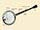
Berimbau
Bouzouki
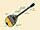
Cello
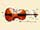
Charango
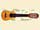
Chitarrone
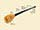
Cimbalom
Double Bass
Erhu
Guitar, bass
Guitar, Bass Steinberger
Guitar, Classical
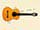
Guitar, Electric
Guitar, Electric Archtop
Guitar, Fretless Bass
Guitar, Les Paul
Guitar, Pedal Steel
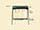
Guitar, Resonator or dobro
Guitar, Steel-String
Guitar, Torres
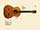
Guitar, Twelve-String
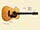
Hammer Dulcimer
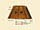
Harp
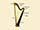
Harp, Celtic or Irish Harp
Harp, Veracruz
Hurdy-Gurdy
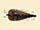
Kamanche
Kantele
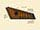
Kora
Koto
Krar
Lute
Mandolin
Pipa
Qin
Rebab Andaluz
Rebec
Sarangi
Saùng-gauk
Shamisen
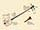
Sitar
Ud
Ukulele
Valiha
Vina
Viol
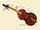
Viola
Violin
Violin, Hardanger Fiddle
Yueqin
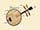
Zither
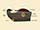
Legal notice